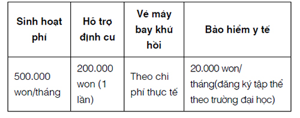

Tác giả: Adina Laura Achim (người Rumani).
Nghề nghiệp: Chuyên gia Quan hệ quốc tế và Quan hệ công chúng, nhà văn và nhà báo.
Nơi sinh sống: Florida (Hoa Kỳ); trước đó đã sống tại 15 quốc gia trên bốn châu lục.
Từ khi còn nhỏ, tôi đã bị mê hoặc bởi nền văn hóa Ý. Trong độ tuổi đang trưởng thành, tôi đã say mê các bộ phim Tân hiện thực của Ý và bị quyến rũ bởi một nền văn hóa Ý truyền thống “bị lãng quên”, do đó không có gì đáng ngạc nhiên khi tôi quyết định chuyển đến Arezzo và sau đó đến Rome.
Sau khi tốt nghiệp, tôi thực hiện một cuộc phiêu lưu mùa hè vòng quanh nước Ý. Chuyến đi đã giúp tôi không chỉ khám phá về đất nước, ngôn ngữ và nền văn hoá mới mẻ mà còn giúp tôi hiểu rõ hơn những ưu tiên của bản thân trong cuộc sống. Chuyến đi mạo hiểm quanh nước Ý của tôi đã trở thành một chuyến đi khám phá bản thân đồng thời tất cả các kỹ năng của tôi cũng đã được cải thiện.
Khi mới đặt chân đến Ý, tôi hầu như không thể nói “Ciao” (chào) thậm chí không đủ khả năng gọi một ly cà phê nhưng sau ba tháng học ngôn ngữ với cường độ cao, ngữ pháp và từ vựng của tôi đã đạt đến trình độ mà việc duy trì cuộc trò chuyện với người bản địa không còn là một nhiệm vụ khó khăn. Chìa khóa thành công của tôi không nằm trong các lớp học nhàm chán (và tốn kém) đã khiến tôi bỏ học khá thường xuyên mà ở sự “đắm chìm” vào văn hoá địa phương. Hầu hết vốn từ vựng tiếng Ý của tôi đều được học qua các chương trình truyền hình, âm nhạc địa phương (thực ra, tôi đổ lỗi cho Laura Pausini 28 vì âm giọng tiếng Ý của mình) và qua các cuộc trò chuyện với những người bán hàng rong và những người bạn mới quen.
[28]
Laura Pausini (sinh năm 1974), là ca sĩ và nhạc sĩ người Ý, nổi tiếng với chất giọng có hồn và các bản ballad lãng mạn.
Khi đạt đến trình độ thông thạo năm ngôn ngữ, tôi thấy rằng các phương pháp học truyền thống không thành công với mình. Từ nhỏ, tôi nhận ra rằng các lớp học ngoại ngữ cung cấp cho bạn ngôn ngữ khô khan, trong khi các phương pháp thực tế như “đắm chìm” vào nền văn hoá mới lại thành công hơn rất nhiều.
Khi sống ở Tây Ban Nha, tôi học tiếng Tây Ban Nha; ở Đức, tôi học tiếng Đức; ở Hoa Kỳ, tôi học tiếng Anh; ở Hungary thì tôi học tiếng Hungary còn khi ở nước Ý yêu dấu, tôi đã thông thạo tiếng Ý. Du lịch nước ngoài là cách để tôi để vượt qua những sự khác biệt về văn hoá và rào cản ngôn ngữ, khám phá những khả năng mới, làm cho con người tôi phong phú hơn.
Đi đến đâu, tôi cũng cố gắng tận dụng tối đa những kinh nghiệm của mình, điều này đóng vai trò tích cực trong cuộc sống. Tôi không bao giờ bỏ qua các bữa tiệc hoặc các sự kiện văn hóa vì chúng là cơ hội tuyệt vời để tôi kết bạn và luyện tập ngoại ngữ. Tôi đã cố gắng để có các lựa chọn giải trí giống người dân địa phương như xem telenovelas (các bộ phim truyền hình dài tập) ở Argentina, noticias de corazón (tin tức nóng hổi về những người nổi tiếng) ở Tây Ban Nha và các chương trình truyền hình mà tôi thấy là kỳ cục ở Ý. Bằng cách này, tôi có thể thảo luận về những gì đang diễn ra với bạn bè địa phương và tôi luôn được cập nhật về những vấn đề, tin tức mới nhất của địa phương. Những bản tin truyền hình đặc biệt hấp dẫn đối với tôi vì đó là cơ hội giúp tôi làm quen với những thuật ngữ “phức tạp” hơn, nhằm cải thiện khả năng giao tiếp của mình.
Một trong những cách giúp tôi cải thiện trình độ giao tiếp của mình đó là sống cùng người bản xứ. Chuyển đến sống cùng một người bản địa thúc đẩy việc nói, tư duy ngôn ngữ bạn đang học và nó dạy cho bạn những bài học “thực tế” hiếm khi được thấy trong sách hay lớp học.
“Sự khôn ngoan theo lối cổ truyền” (Conventional wisdom) ngụ ý rằng khi yêu một người yêu bản địa, kỹ năng ngôn ngữ của bạn sẽ được nâng cao; tuy nhiên, tôi gợi ý bạn nên mở rộng các giới hạn của cụm từ trên và không chỉ yêu người bản địa mà còn yêu cuộc sống, bạn bè, văn hoá mới. Hãy giữ cho tâm trí và trái tim bạn rộng mở. Bằng cách này, bạn sẽ hoàn toàn đắm chìm vào văn hoá mới và học ngoại ngữ một cách nhanh chóng hơn.